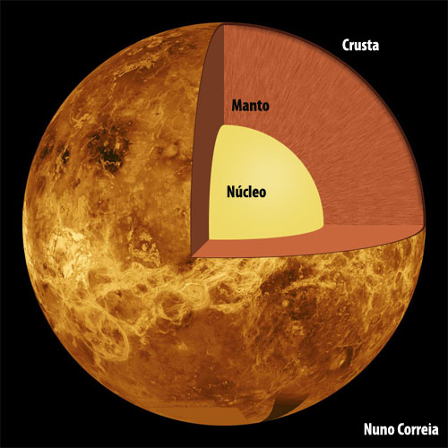
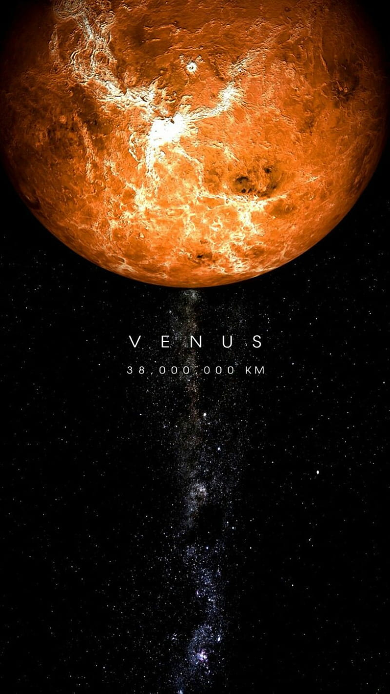
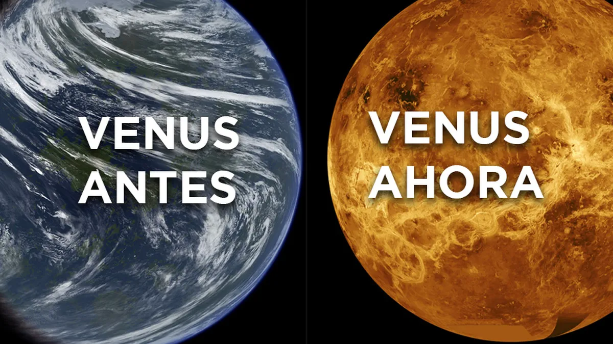
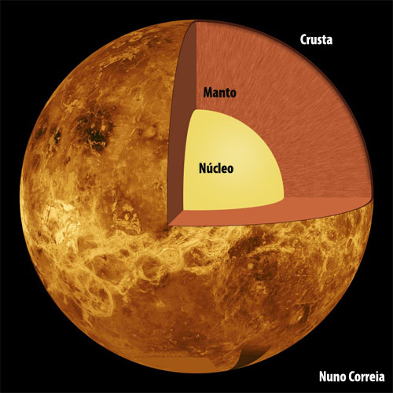
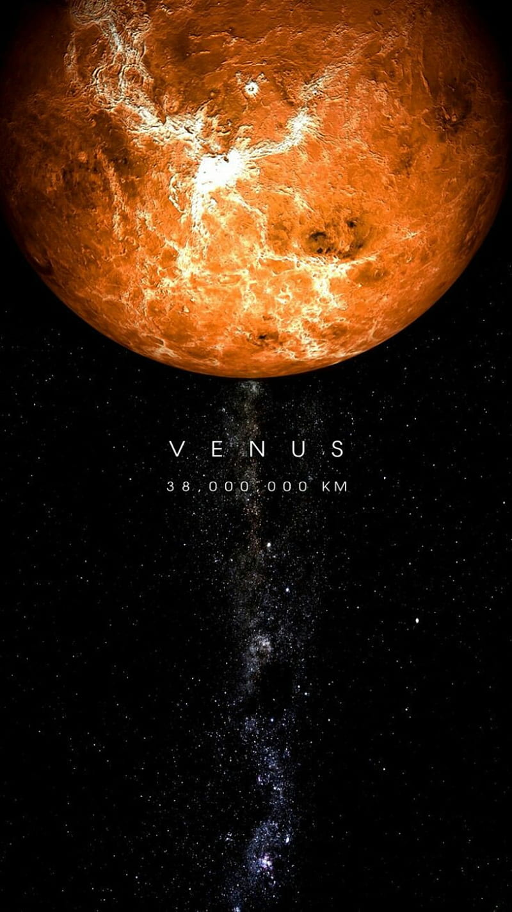
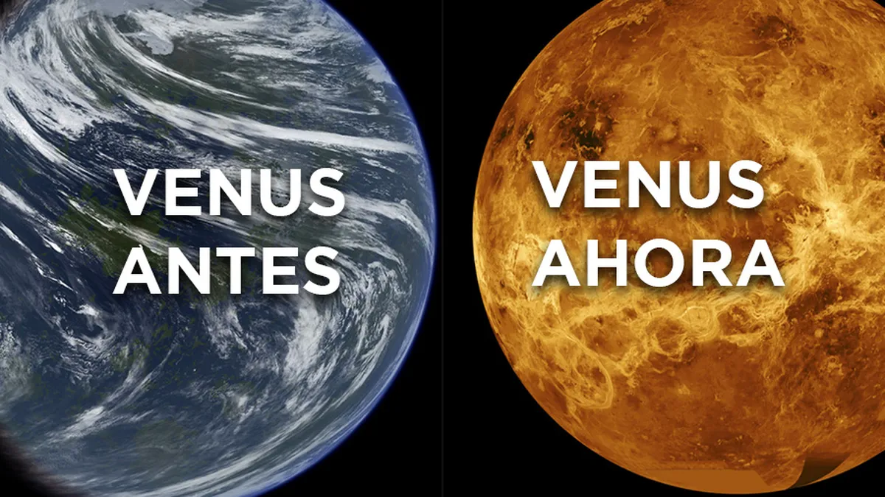
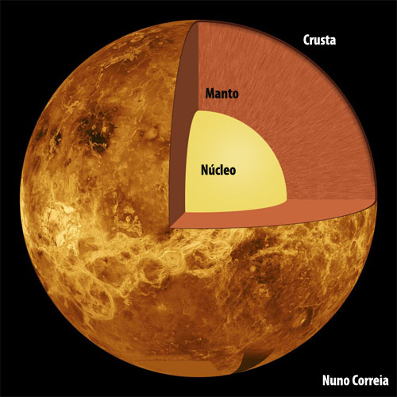
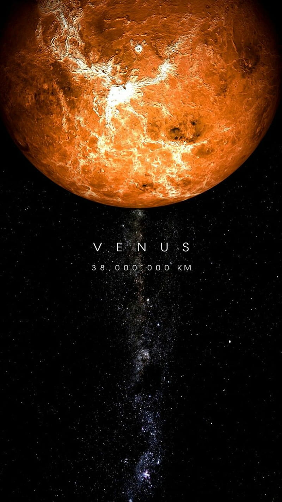
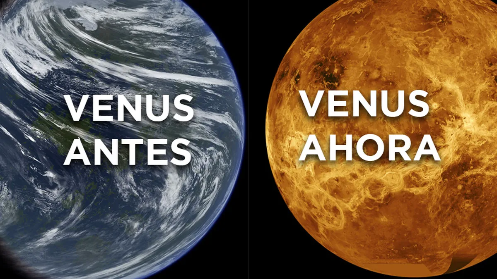

Venus es el segundo planeta del sistema solar en orden de proximidad al Sol y el tercero más pequeño después de Mercurio y Marte. Al igual que Mercurio, carece de satélites naturales. Recibe su nombre en honor a Venus, la diosa romana del amor (en la Antigua Grecia, Afrodita). Al ser el segundo objeto natural más brillante después de la Luna, puede ser visto en un cielo nocturno despejado a simple vista. Se trata de un planeta interior de tipo rocoso y terrestre, llamado con frecuencia el planeta hermano de la Tierra, ya que ambos son similares en cuanto a tamaño, masa y composición, aunque totalmente diferentes en cuestiones térmicas y atmosféricas (la temperatura media de Venus es de 463,85 °C). Su órbita es una elipse con una excentricidad de menos del 1 %, formando la órbita más circular de todos los planetas; apenas supera la de Neptuno. Su presión atmosférica es 90 veces superior a la terrestre; es, por lo tanto, la mayor presión atmosférica de todos los planetas rocosos del sistema solar. Es de color amarillento debido a su atmósfera, que está compuesta en su mayoría por dióxido de carbono (CO2), ácido sulfhídrico (H2S) y nitrógeno (N2). Pese a situarse más lejos del Sol que Mercurio, Venus posee la atmósfera más caliente del sistema solar; esto se debe a que está principalmente compuesta por gases de efecto invernadero, como el dióxido de carbono, atrapando mucho más calor del Sol. Actualmente carece de agua líquida y sus condiciones en superficie se consideran incompatibles con la vida conocida, aunque en descubrimientos recientes se ha encontrado fosfina en su superficie nebular, una molécula que en la Tierra es generada por microbios, lo que da indicios de una posible existencia de vida. No obstante, el Instituto Goddard de Estudios Espaciales de la NASA y otros han postulado que en el pasado Venus pudo tener océanos con tanta agua como el terrestre y reunir condiciones de habitabilidad planetaria. Este planeta además posee el día más largo del sistema solar —243 días terrestres—, su movimiento es dextrógiro, es decir, gira en el sentido de las manecillas del reloj, contrario al movimiento de los otros planetas. Por ello, en un día venusiano el Sol sale por el oeste y se pone por el este. Sus nubes, sin embargo, pueden dar la vuelta al planeta en cuatro días terrestres. De hecho, previamente a estudiarlo con naves no tripuladas en su superficie o con radares, se pensaba que el período de rotación de Venus era de unos cuatro días terrestres.
| Característica | Venus |
|---|---|
| Distancia orbital (km) | 108.209.475 |
| Radio ecuatorial (km) | 6.051 |
| Volumen (km3) | 928.415.345.893 |
| Masa (kg) | 4.867.320 x 1018 |
| Densidad (g/cm3) | 5,243 |
| Gravedad en superficie (m/s2) | 8,87 |
| Velocidad de escape (km/h) | 37.296 |
| Duración del día | 116 días y 18 horas terrestres |
| Duración del año | 225 días terrestres |
| Velocidad de su órbita alrededor del Sol (km/h) | 126.074 |
| Composición de la atmósfera (exosfera) | Dióxido de Carbono y Nitrógeno |
Parte de la intensidad del brillo de Venus es debido a la cercanía con la Tierra, ya que se trata del planeta que más próximo se encuentra de nosotros. Venus, además, es observable en el firmamento durante las 3 últimas horas después del atardecer y las 3 primeras antes del amanecer, lo que unido a la intensidad de su brillo, ha hecho que también sea denominado como el "Lucero del Alba".También Venus el segundo planeta más cercano al Sol y el tercero en tamaño después de Mercurio y Marte. Al igual que Mercurio carece de satélites. Se trata de uno de los 4 planetas rocosos del sistema solar y debido a la gran similitud tanto en tamaño como en densidad con nuestro planeta, en ocasiones es denominado como el planeta gemelo de la Tierra. Sin embargo Venus no es tan parecido a la Tierra como cabría esperar. Por ejemplo, una gran diferencia con la Tierra y el resto de planetas del sistema solar es que Venus gira sobre su eje al contrario que los demás, es decir, en el caso de Venus el Sol sale por el oeste y se pone por el este. Además su rotación es tremendamente lenta, ya que tarda 243 días en dar una vuelta sobre si mismo, lo que propicia que el año en Venus, el cual dura 225 días, sea mas corto que un día en el propio planeta.
Respecto a su tamaño, Venus el es planeta más parecido a la Tierra del sistema solar: tiene un diámetro de 12.104 kilómetros, frente a los 12.756 de nuestro planeta. Al igual que la Tierra, Venus posee un núcleo de hierro envuelto por un manto de roca caliente y una corteza rocosa. En cuanto a su superficie presenta un color oxidado y está salpicada de montañas y miles de grandes volcanes, algunos de los cuales aún siguen activos.Los científicos también postulan que Venus pudo haber sido en algún momento mundo oceánico habitable como la Tierra, pero eso fue hace al menos mil millones de años. La teoría también defiende que hace unos cuantos millones de años, la superficie del planeta Venus se pareció a la del nuestro, pero que las fuerzas tectónicas y la actividad volcánica la cambiaron para siempre. Por ejemplo, los últimos estudios barajan la posibilidad de que la mayor parte de la superficie de Venus se formó hace tan solo 150 millones de años.Al igual que la Tierra, Venus posee un campo magnético, si embargo al contrario que sucede en nuestro planeta, este no estaría inducido por su núcleo de hierro, si no por la interacción del campo magnético del Sol con la atmósfera exterior de Venus, formando lo que se llama un campo magnético inducido.
Otro de los grandes ejemplos de las diferencias de Venus y la Tierra, es su infernal atmósfera, muy espesa y rica en dióxido de carbono. De hecho, la atmósfera de Venus es tan densa que desde su superficie el Sol se vería como un tenue destello de luz. Esto, junto a las densas nubes de ácido sulfúrico que la rodean generan tal efecto invernadero que hacen de Venus el planeta más caliente del sistema solar; más incluso que Mercurio, el planeta más próximo al Sol. Así la temperatura en Venus puede alcanzar los 475ºC, suficiente como para derretir el plomo, y la presión a nivel de superficie puede alcanzar las 90 atmósferas, la mayor de todos los planetas del sistema solar. Otra característica particular de la atmósfera de Venus es que gira más rápido que el propio planeta; así las nubes de Venus pueden llegar a dar la vuelta al mismo en tan solo 4 días.
Tamaños comparativos de los planetas terrestres, Mercurio a la izquierda, Venus, Tierra y Marte.

El planeta Venus fue el primer cuerpo del sistema solar, tras la Luna, que fue visitado por una sonda espacial, la Venera I, de origen soviético, y la cual se convirtió en la primera sonda de la historia que alcanzó con éxito otro planeta. Sin embargo, para obtener los primeros datos del planeta gemelo de la Tierra hubo que esperar hasta el año 1962, en el que la sonda Mariner 2 de la NASA transmitió los primeros datos desde Venus. El resto de la década de los 60 y parte de la de los 70 puede considerarse la época de oro de la exploración venusiana. Durante este periodo varias fueron las sondas soviéticas y estadounidenses que alcanzaron Venus. Entre ellas, la Venera 3, aunque se estrelló, se convirtió en el primer objeto creado por el hombre en posarse en otro planeta y la Venera 4 fue la primera que transmitió datos medidos directamente en otro mundo.Durante las décadas posteriores el interés por Venus disminuiría, sin embargo en el año 1970 se produjo el primer aterrizaje exitoso sobre la superficie del planeta (Venera 7), y en 1974, en su camino hacia Mercurio, la sonda Mariner 10 de la NASA fotografió la atmósfera venusiana en ultravioleta. En la década de los 80, destacan las misiones soviéticas Venera 13,14,15 y 16, y la misiones Estadounidenses Vega y Magallanes. En la década de los 90, varias son sondas espaciales en ruta hacia otros destinos que han usado el método de sobrevuelo de Venus para incrementar su velocidad mediante el impulso gravitacional, entre ellas las sondas Cassini y Galileo. Más tarde, en la primera década del nuevo milenio la ESA se estrena con su primera Misión a Venus, la Venus Express. Y en la actualidad Venus es el objetivo principal de misiones científicas europeas y japonesas.


